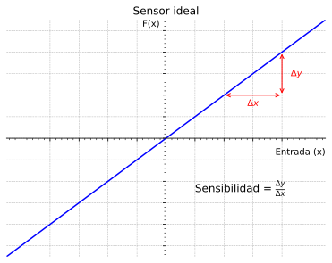

Robótica
Clase 12
Semana 13 - 09/06/2025
Percepción
Una de las tareas más importantes en sistemas autónomos es la de adquirir información acerca del entorno a través de Sensores

Caracterización
Tiempo de respuesta: Tiempo que tarda la salida de un sensor en cambiar a un valor final
Ancho de banda: Rango de frecuencia que puede detectar adecuadamente

Encoders de cuadratura
Encoder magnético montado en motor DC con escobilla


Acelerómetro
Dispositivos electromecánicos que miden la aceleración a la que se encuentran afectados (propioceptivos y pasivos)
ADXL362: Accelerómetro de 3 ejes (3DoF)

Medición de la aceleración asociada a una masa en movimiento

Giróscopos
Dispositivos electromecánicos que miden la velocidad angular a la que se encuentran afectados (propioceptivos y pasivos)
LPY503AL: Giróscopo de 2 ejes (2DoF)

Medición de la velocidad angular

Sensor de ultrasonido ToF
Transmite un ”paquete” de ondas de presión ultrasónicas y mide el tiempo que tardan en reflejarse y volver.
- Generalmente en robótica móvil se utilizan en rangos de 5 a 200 [cm]
- Cuanto más cerrado es el ángulo de apertura del haz mejor resolución direccional
- Principal limitación: se obtiene la profundidad de una región constante (1D)


Sensor láser ToF
TFmini sensor de distancia 1D

VL53L7CX sensor de distancia 2D (8x8)

Triangulación óptica 1D
- Buena exactitud con alta precisión a un bajo costo
- Gran ancho de banda y no sufre interferencia como el ultrasonido
- Rango limitado por la geometría del sensor
GP2Y0A02YK0F (20-150cm) y GP2Y0A60SZLF (10-150cm)

Fuente: Pololu (www.pololu.com)
Light Detection and Ranging - LiDAR
Medir la distancia al objeto más próximo en un radio de 360° sobre un plano con gran precisión angular y lineal
- Utilizan triangulación (mayoría) o ToF
- Extensión a 3D mediante mecanismos mecánicos y/u ópticos
Slamtec RPLiDAR A3M1 (2D)